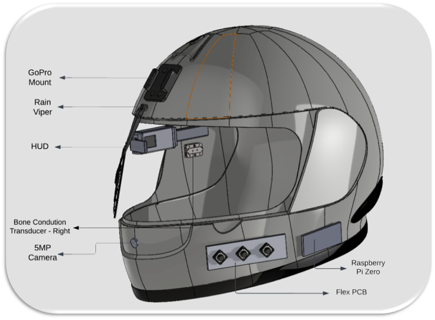

Robotics & AI Projects
Stepper Motor based Self Balancing Robot with PID control
 Developed a self-balancing robot using stepper motors and A4988 drivers, driven by an Arduino-based PID balancing algorithm. Created a URDF model and working towards teleoperation from ROS.
Developed a self-balancing robot using stepper motors and A4988 drivers, driven by an Arduino-based PID balancing algorithm. Created a URDF model and working towards teleoperation from ROS.
Skills: PID · SOLIDWORKS · ROS · Rviz · Circuit Design
Key Achievements
✦ Stepper Motor Innovation:
Utilized stepper motors with A4988 drivers, eliminating the need for encoders essential in DC motors, streamlining teleoperation prospects.
✦ Efficient Prototyping:
Leveraged SOLIDWORKS design and 3D printing for rapid prototyping, expediting development cycles for swift iterations.
✦ Custom Motor Control Function:
Wrote a custom function for stepper motor control via A4988 drivers, enhancing operational versatility without the use of existing libraries.
✦ Balancing Algorithm Implementation:
Employed Arduino's PID library for algorithmic balancing, ensuring stable and accurate self-balancing behavior of the robot.
✦ Custom PCB Integration:
Designed a custom PCB integrating A4988 drivers, BMS circuitry, BNO055 IMU, and LiPo battery, optimizing system efficiency and streamlining the functionality.
Real-Time Steam Plant Man Hole Cover Detection using Single Shot Detectors - YOLO
 Implementing YOLOv8, YOLOv5, and YOLOv3 via transfer learning on a local GPU, we aimed to detect steam plant manhole covers. Integration included RGB and FLIR thermal cameras alongside GPS.
Implementing YOLOv8, YOLOv5, and YOLOv3 via transfer learning on a local GPU, we aimed to detect steam plant manhole covers. Integration included RGB and FLIR thermal cameras alongside GPS.
Skills: YOLO · Deep Learning · CUDA · Nvidia Jetson · Arduino · GPS
Key Achievements
✦ Custom Model Training:
Trained models on a bespoke dataset comprising 2000 images for detecting manhole covers, meticulously evaluating latency and accuracy for optimization.
✦ Real-Time Detection and Alerting:
Enabled the real-time identification of high-temperature manhole covers with precise GPS coordinates, triggering immediate alerts for facilities management inspection.
✦ Efficient Deployment:
Deployed Nvidia Jetson Nano with FLIR A50 Thermal camera on a mobile platform, ensuring seamless monitoring and proactive maintenance with location data from Neo-8m GPS.
ARIAC 2023 - Agile Robotics for Industrial Automation
 Developed an Industrial Robotics Manufacturing System featuring AGVs, manipulators, and sensors for automated component manufacturing in a ROS2 Gazebo environment. Modeled after the ARIAC 2023 challenge, focusing on agility and autonomy in kitting tasks.
Developed an Industrial Robotics Manufacturing System featuring AGVs, manipulators, and sensors for automated component manufacturing in a ROS2 Gazebo environment. Modeled after the ARIAC 2023 challenge, focusing on agility and autonomy in kitting tasks.
Skills: ROS · Robotics · Gazebo · Rviz · Software Development · C++ · Python Programming
Key Achievements
✦ Coursework Simulation:
Developed as part of ENPM663 coursework, mirroring the ARAIC 2023 challenge to assess industrial robot agility.
✦ ROS2 and Gazebo Frameworks:
Utilized ROS2, Gazebo, and RViz for system development, integrating UR5 manipulators, AGVs, IR cameras, proximity sensors, and 3D depth cameras.
✦ Kitting Task Automation:
Addressed challenges such as fault and inconsistency in parts, emphasizing autonomous completion of kitting tasks within industrial manufacturing.
✦ Autonomy and Productivity Focus:
Aligned with ARIAC's objective of enhancing industrial robot autonomy and productivity, minimizing human intervention in complex manufacturing processes.
Autonomous Mobile Robot for Shape-Sorting Application
 Developed an autonomous mobile robot for a demo construction site, proficient in identifying colored shapes and transporting them to designated zones using a 2-DoF gripper.
Developed an autonomous mobile robot for a demo construction site, proficient in identifying colored shapes and transporting them to designated zones using a 2-DoF gripper.
Skills: OpenCV · Robotics · Python Programming · Arduino IDE · EasyEDA · Embedded Systems · PID
Key Achievements
✦ Precision Control Implementation:
Leveraged PID for precise motor synchronization, OpenCV for accurate color detection, and monocular depth estimation for optimal trajectory planning.
✦ Custom Hardware Development:
Developed a Raspberry Pi-based physical robot from scratch, featuring a custom-built software stack, showcased prominently in a high-stakes grand challenge competition.
✦ Robust Electrical Hardware:
Engineered hardware using a blend of metal and 3D printed components, along with custom-designed PCBs for seamless interfacing between IMUs, encoders, and the Raspberry Pi.
✦ Integration and Versatility:
Integrated IMUs via Arduino, programmed in C++, alongside a Python-based detection stack, ensuring robust performance and versatility in operations.
Training & Testing a Neural Network based on YOLOv3 for Custom Object Detection
 Utilizing transfer learning, we trained neural networks based on YOLOv3 specifically for human detection, leveraging a custom dataset.
Utilizing transfer learning, we trained neural networks based on YOLOv3 specifically for human detection, leveraging a custom dataset.
Skills: YOLO · OpenCV · Python Programming · Deep Learning
Key Achievements
✦ Comprehensive Dataset Annotation:
Utilized data from various open-source repositories, meticulously annotated using LabelImg software to ensure thorough training.
✦ Seamless Model Deployment:
Successfully deployed trained models on a mobile robot, seamlessly integrating with an IP Cam for real-time human detection in dynamic environments.
✦ Efficient Training Process:
Training iterations involved 50 epochs with a batch size of 4, executed efficiently on a 3060 laptop GPU, ensuring optimal model performance and accuracy.
Custom Robotic Arm for Pick & Place Operations using Stereo Vision
 Engineered a cutting-edge 6-DoF manipulator from the ground up, employing innovative 3D printed designs and assembly, subsequently programmed for essential pick & place functionalities utilizing MoveIt and ROS 2 frameworks.
Engineered a cutting-edge 6-DoF manipulator from the ground up, employing innovative 3D printed designs and assembly, subsequently programmed for essential pick & place functionalities utilizing MoveIt and ROS 2 frameworks.
Skills: ROS · MOVEit · Stereo Vision · SOLIDWORKS · C++ · Arduino IDE · OpenCV · Python Programming · YOLO
Key Achievements
✦ Enhanced Perception Accuracy:
Utilized Intel RealSense cameras and a custom-built stereo depth estimation library to enhance perception accuracy, crucial for precise manipulation tasks.
✦ Robust Simulation and Testing:
Constructed a comprehensive URDF model in SOLIDWORKS, rigorously tested in Gazebo before integration with MOVEit for precise programming and validation.
✦ Advanced Motor Control:
Implemented Arduino Pro Mini as the motor controller and high-torque DC servos, facilitating inter-servo communication via Daisy Chain Architecture or i2c interface, ensuring smooth and synchronized motion.
✦ Performance Evaluation:
Conducted a comprehensive performance evaluation against the industry-standard UR5e industrial manipulator for identical pick & place tasks, showcasing the capabilities of our design.
✦ Tailored Electronics Integration:
Developed and fabricated a custom PCB with Arduino and interface circuitry, precisely tailored to the manipulator's CAD model, ensuring optimal functionality and seamless integration.
Hardware Implementation of Pick & Place Operation using UR5e
 Developed software stack for Universal Robot's robotic manipulator, specializing in basic pick and place operations. Developed an Inverse Kinematics (IK) solver, tested on Gazebo, and seamlessly deployed on hardware utilizing MoveIt and ROS 2.
Developed software stack for Universal Robot's robotic manipulator, specializing in basic pick and place operations. Developed an Inverse Kinematics (IK) solver, tested on Gazebo, and seamlessly deployed on hardware utilizing MoveIt and ROS 2.
Skills: C++ · ROS · MOVEit · SOLIDWORKS
Key Achievements
✦ Custom IK Solver Development:
Designed and implemented a custom IK solver, ensuring precise end effector coordination relative to the robot's base, validated through comprehensive testing on Gazebo.
✦ Seamless Integration with MoveIT and ROS 2:
Integrated with MoveIT and ROS 2, facilitating seamless deployment of the IK solver onto hardware for real-world applications.
✦ Functional Validation:
Demonstrated functionality by publishing end effector coordinates to the UR5e manipulator in RViz using the C++ Move Group interface, showcasing operational efficacy and reliability.
✦ Real-World Application Testing:
Successfully demonstrated functionality using Gazebo and a UR5e manipulator from the University of Maryland's Robot Realization Laboratory (RRL).
Mono-Camera Human Pose Estimation and Tracking using OpenCV
 Developed an algorithm leveraging OpenCV for human pose estimation, deployed seamlessly on a laptop webcam, providing Cartesian coordinates with depth information in 3D. Implemented robust human tracking across frames with unique ID assignment.
Developed an algorithm leveraging OpenCV for human pose estimation, deployed seamlessly on a laptop webcam, providing Cartesian coordinates with depth information in 3D. Implemented robust human tracking across frames with unique ID assignment.
Skills: C++ · OpenCV · Agile Software Development
Key Achievements
✦ Advanced Algorithm Development:
Employed OpenCV and C++ with a HOG Detector for precise human detection, following agile methodologies and software development best practices.
✦ Accurate 3D Pose Estimation:
Achieved 3D pose estimation using monocular depth estimation approximations. Ensured accuracy through rigorous validation against ground truth measurements.
✦ Seamless Integration:
Seamlessly deployed the algorithm on a laptop webcam, providing real-time 3D Cartesian coordinates with depth information for enhanced understanding.
Smart Kitchen Robot for Automatic Stuffing & Making of Famous Indian Bread Variety
 We have designed and built the world's first fully automated & compact robot that only requires wheat and water to be filled in containers. It can make stuffed parathas, stack them, and store them in hotboxes with smart IoT control. The robot is low cost and would be similar to a microwave oven in both size and cost.
We have designed and built the world's first fully automated & compact robot that only requires wheat and water to be filled in containers. It can make stuffed parathas, stack them, and store them in hotboxes with smart IoT control. The robot is low cost and would be similar to a microwave oven in both size and cost.
Skills: Research & Product Development · Creative Problem Solving · Robotics · Sensors · Project Management · Arduino IDE · Hardware Architecture · Lean Startup · Autodesk Fusion 360 · Leadership · OrCAD Capture CIS
Key Achievements
✦ Complete Autonomy:
BakerBot automates the entire process, from dough preparation to stacking hot, freshly made parathas.
✦ Customizable User Experience:
Using an Android mobile app, users specify the number of rotis or parathas and desired oil level, ensuring precision in every batch and remote operation.
✦ Mechanical Marvel:
BakerBot's compact design houses sophisticated mechatronic systems, including precise process tracking, feedback loops, kneading, encrusting, flattening, and baking.
✦ Seamless Integration:
IoT-based control and mechatronics system powered by an array of sensors and electrical systems, enables effortless operation with just a click from a mobile phone.
✦ Sensor Stack:
A sensor stack with proximity, IR, and current sensors, coupled with peristaltic pumps, endstops, and reed switches, achieves precise measurements and closed-loop feedback for full automation.
Electronics & Software Projects
Head Gear - Bone Conduction & Accident Prevention Smart Helmet
Revolutionizing rider safety with an innovative patented technology, our project integrates advanced driver assistance systems (ADAS) into motorcycle helmets. Real-time alerts and a distraction-free infotainment system leverage HUD and bone conduction technology with i2s for enhanced riding experiences.
Skills: Research & Product Development · Circuit Design · Embedded Systems · Arduino IDE · C++ · Python Programming · Sensors
Key Achievements
✦ Enhanced Rider Safety:
Real-time warnings and alerts for accident prevention using handle vibration mitigate distractions, reducing accident risks. Emergency calls made using VoIP server.
✦ Cutting-edge Technology Integration:
Visor HUD and bone conduction earphone offer seamless audio-visual feedback combined with high-quality i2s stereo audio experience from custom-designed amplifier.
✦ Mechanical Design Validation:
CAD-modeled helmet design with embedded circuits ensures durability and functionality.
✦ Power-efficient Solution:
Custom-designed BMP PCB powers Raspberry Pi Zero and onboard sensors, optimizing performance.
✦ ADAS Features:
Over speed detection, pedestrian crossing detection, and voice-activated Google Assistant embedded and enabled using bone conduction earphone, microphone, and HUD.
Black Box Device for Vessels & Fisherman
 Developed a tamper-proof solar-powered black box device for remote ocean vessel monitoring, seamlessly logging and transmitting vital information to a coast guard control room dashboard. Features include tamper alerts, iridium satellite communication, AI-based activity monitoring, and environmental safety measures.
Developed a tamper-proof solar-powered black box device for remote ocean vessel monitoring, seamlessly logging and transmitting vital information to a coast guard control room dashboard. Features include tamper alerts, iridium satellite communication, AI-based activity monitoring, and environmental safety measures.
Skills: Circuit Design · Hardware Architecture · Creative Problem Solving · Embedded Systems · Prototyping · Project Management · Leadership · Design Documents · Sensors
Key Achievements
✦ Tamper-Proof Solar Device:
Designed a compact, solar-powered black box for ocean vessels, ensuring continuous operation with onboard power backup for up to 7 hours.
✦ Secure Communication:
Utilized Iridium satellite communication for 24/7 worldwide coverage and data transfer, enabling seamless transmission of essential information to the coast guard control room.
✦ Advanced Data Logging and Monitoring:
Implemented AI-based activity monitoring and suspicious activity detection on a computer dashboard, analyzing vessel trajectory and pose for potential threats.
✦ Environmental Safety Integration:
Incorporated environmental safety features such as oil spill detection using UP42 API, enhancing monitoring capabilities for environmental protection.
Ferry Smart - All in one Smart Commute System
 Designed and implemented a hardware-based smart commute solution that bridges the gap between different modes of public transport and acts as a single source for convenient commutation planning with features such as ETA, cost of travel, live tracking, and carbon footprint tracking among others.
Designed and implemented a hardware-based smart commute solution that bridges the gap between different modes of public transport and acts as a single source for convenient commutation planning with features such as ETA, cost of travel, live tracking, and carbon footprint tracking among others.
Skills: Arduino IDE · Circuit Design · C++ · Creative Problem Solving · Agile Software Development · Leadership · OrCAD Capture CIS · Design Documents · Embedded Systems
Key Achievements
✦ Integrated Commute Planning:
Designed a mobile app using Google Maps API to consolidate various public transport modes, enabling convenient route planning and seamless transitions.
✦ GPS-GSM Device Integration:
Implemented Arduino-based low-cost GPS-GSM devices in public transports, interfacing with the app for accurate ETA and commute planning, ensuring efficient travel management.
✦ Multi-Modal Transport Options:
Facilitated selection from multiple transport options, with comparison based on cost, ETA, and carbon footprint. Real-time traffic information from Google Maps API enhances ETA accuracy.
✦ Comprehensive Metrics:
Calculated metrics integrated into the app provide insights into cost, ETA, and carbon footprint, empowering users to make informed commuting decisions for sustainable travel.
Smart Muffler to prevent Noise Induced Hearing Loss
 Designed a MATLAB algorithm using multiple microphones to detect and attenuate sounds above 80 dBA in real-time, enhancing speech clarity. Integrated filters for noise reduction and devised a smart muffler with Raspberry Pi-based data processing to prevent noise-induced hearing loss.
Designed a MATLAB algorithm using multiple microphones to detect and attenuate sounds above 80 dBA in real-time, enhancing speech clarity. Integrated filters for noise reduction and devised a smart muffler with Raspberry Pi-based data processing to prevent noise-induced hearing loss.
Skills: MATLAB · Digital Electronics · C++ · Circuit Design
Key Achievements
✦ Real-time Noise Reduction Algorithm: Developed MATLAB algorithm to detect and reduce sounds >80 dBA, ensuring a quieter environment.
✦ Speech Enhancement Feature: Identified speech signals in noise and amplified them for clarity in noisy settings.
✦ Filter Implementation with MATLAB: Utilized MATLAB built-in functions to implement filters, reducing background noise while preserving speech.
✦ Design for Integration into Smart Muffler: Integrated noise reduction system into a smart muffler with earphones and Raspberry Pi-based data processing, offering enhanced hearing protection and noise management.
Load Based Safety Regulator
 Developed an economical vehicle regualting system, installable as an inbuilt or retrofit feature for public buses. Utilizes piezoelectric disks for footboard load detection and motion sensors to activate the handbrake through ECM when stationary.
Developed an economical vehicle regualting system, installable as an inbuilt or retrofit feature for public buses. Utilizes piezoelectric disks for footboard load detection and motion sensors to activate the handbrake through ECM when stationary.
Skills: Arduino IDE · Circuit Design · C++ · Embedded Systems
Key Achievements
✦ Economical Regulating System: Designed for vehicles, adaptable as an inbuilt or retrofit solution for public buses, enhancing safety and control.
✦ Piezoelectric Load Detection: Utilizes piezoelectric disks to detect footboard load, triggering the handbrake activation when the vehicle is stationary.
✦ Motion Sensing Integration: Integrated GPS and IMU as motion sensors, facilitating precise detection of vehicle state and enabling control over the braking system or throttle through the ECM.
✦ Visual and Auditory Indication: Activates indication LED and buzzer on the vehicle dashboard until the footboard load is removed, providing clear signals to the driver and passengers.
Density Based Traffic Lighting System
 Created a smart traffic lighting prototype, dynamically adjusting signal timings at intersections based on traffic density. Utilizes IR array sensors embedded in roads for vehicle detection, enabling algorithm-driven signal adjustments.
Created a smart traffic lighting prototype, dynamically adjusting signal timings at intersections based on traffic density. Utilizes IR array sensors embedded in roads for vehicle detection, enabling algorithm-driven signal adjustments.
Skills: Arduino IDE · C++ · Sensors
Key Achievements
✦ Dynamic Signal Timing: Adapts signal timings at intersections based on real-time traffic density, enhancing traffic flow and reducing congestion.
✦ IR Array Sensors: Embedded in roads for precise vehicle detection, providing feedback to the smart algorithm for timely signal adjustments.
✦ Algorithm-Driven Control: Utilizes a smart algorithm to analyze sensor data and dynamically alter signal timings, optimizing traffic management.
✦ Prototype Development: Implemented with IR array sensors and Arduino microcontroller, showcasing feasibility and effectiveness for real-world deployment.
Wireless Health Monitoring System
 Developed a prototype for simplified doctor monitoring, enabling 24/7 wireless tracking of vital parameters (ECG, pulse rate, breath rate, temperature), alongside motion sensor-based seizure detection for post-operative patients.
Developed a prototype for simplified doctor monitoring, enabling 24/7 wireless tracking of vital parameters (ECG, pulse rate, breath rate, temperature), alongside motion sensor-based seizure detection for post-operative patients.
Skills: Arduino IDE · Sensors · C++ · Hardware Architecture · Visual Studio
Key Achievements
✦ Seamless Vital Parameter Monitoring: Enabled continuous wireless tracking of vital parameters such as ECG, pulse rate, breath rate, and temperature for enhanced patient care.
✦ Post-Operative Seizure Detection: Implemented IR-based motion sensor seizure detection to promptly alert medical staff, ensuring timely intervention and patient safety.
✦ Efficient Communication and Data Collection: Utilized Zigbee mesh networking for seamless communication with doctors and other devices within the hospital, while Arduino facilitated sensor interfacing and data acquisition.
✦ Intuitive Doctor Monitoring Dashboard: Developed a Visual Studio-based Windows dashboard for doctors to monitor patient vital signs efficiently, providing real-time insights for informed decision-making.
Undergraduate Research
Sustainable Energy using Cow's Methanogenesis
 Proposed a revolutionary device capturing methane emissions from cow burps, storing it in an inflatable pouch for cooking or fueling bio-based vehicles.
Proposed a revolutionary device capturing methane emissions from cow burps, storing it in an inflatable pouch for cooking or fueling bio-based vehicles.
Skills: Hardware Architecture · Circuit Design · Creative Problem Solving · Sensors · Research & Product Development · EasyEDA
Key Achievements
✦ Innovative Methane Capture System: Developed a device to capture and store methane emissions from cow burps in an inflatable pouch, offering a new sustainable energy source for cooking or biofuel and mitigating climate change.
✦ Smart MANET Protocol Integration: Deployed Smart MANET Protocol for 24/7 monitoring of cow burping patterns and pouch fuel levels in remote areas without internet or Wi-Fi, ensuring efficient operation.
✦ Automatic Sensing and Management: Incorporated automatic sensing of cow burps, with the device filtering and storing methane gas in the pouch. Alerts notify when the pouch is full, requiring replacement or utilization.